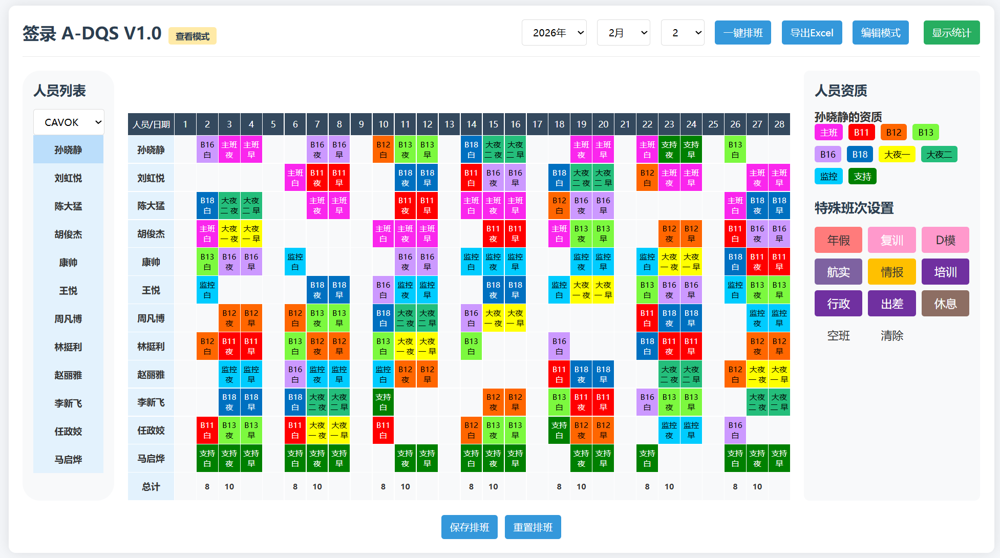
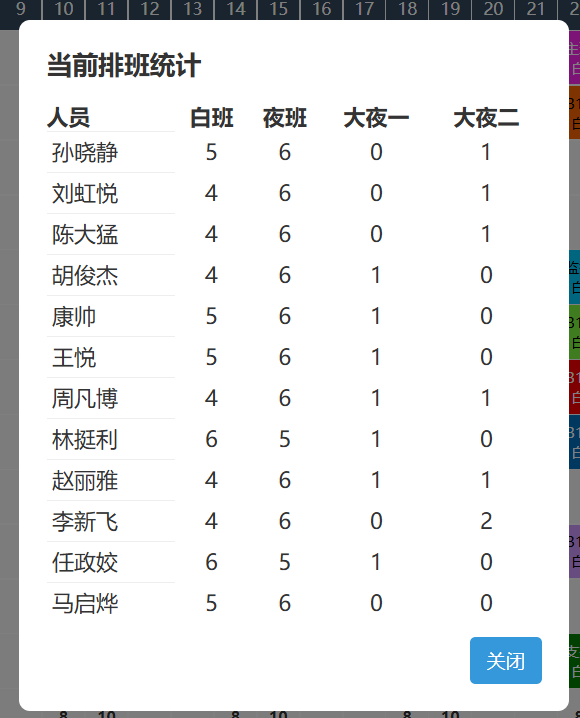

签录 A-DQS V1.0 使用手册
本手册用于说明排班系统的功能、规则与操作流程，并提供示例与截图位。
📌 系统能力一览
- 一键自动排班（按班组、起始白班日期生成整月）
- 固定班/特殊班次（年假、复训、D模、航实、情报、培训、行政、出差、休息、空班）
- 夜班 → 次日早班自动映射（仅由前一日夜班生成）
- 主班/大夜优先排班
- 拖拽交换/移动（同日、带资质校验）
- 统计面板（白班/夜班/大夜一/大夜二统计）
- 每日总计行 + 导出 Excel
🖼️ 截图
将截图保存为下列文件后，文档会自动展示：
docs/images/overview.png：主页面截图docs/images/stats.png：统计面板示例


✅ 快速开始
- 打开
签录 A-DQS V1.0.html。
- 选择 班组 / 年月 / 从几号白班开始排班（注意是第一个白班日期）。
- 需要特殊班次的成员，可在“编辑模式”下设置固定班。
- 点击“一键排班”。
- 如需导出，点击“导出Excel”。
🧭 操作流程
1) 设置班组与起始日期
- “从几号开始”将影响排班周期与早班映射。
- 系统会遵循固定班，并在空余席位上进行排班。
2) 固定班设置
- 进入“编辑模式”，点击单元格选择班次。
- 固定班会被系统锁定，不会被自动覆盖。
3) 自动排班
- 系统先锁定固定班，再排主班/大夜一/大夜二，最后排其他班。
- 夜班生成后，自动映射次日早班。
4) 拖拽交换
- 同一天内支持交换或移动。
- 交换会进行资质校验并提示确认。
📐 排班规则
1) 排班顺序
- 固定班优先
- 主班/大夜一/大夜二优先
- 其他夜班
- 其他白班
2) 资质限制
成员必须具备对应席位资质才可被分配。
3) 夜班与早班
- 早班只由前一日夜班映射生成。
- 若前一日夜班不存在或冲突，次日不生成早班。
4) 均衡原则
- 工作量按 1夜=2白 计入均衡。
- 主班、大夜按人均尽量均衡（主班≤4，大夜约1~2）。
🧮 减班规则（不影响显示）
- 年假/复训：白 +1、夜 +2
- 航实：夜 +1
- D模：夜 +1
- 行政/出差/培训/情报：按天减少白班
🧾 显示规则（情报班）
- 当日有固定“情报”班：总计白班 +1
- 统计模块：情报次数计入个人白班显示
- 仅影响展示，不影响排班或减班逻辑
✅ 示例场景
示例 1：从 4 号开始排班
- 1～3 号保持原始空白/固定班。
- 从 4 号起进入排班周期。
示例 2：夜班 → 早班映射
- 3 号夜班为 B11，则 4 号自动生成 B11 早班。
- 若 4 号已有固定班或特殊冲突，则不生成早班。
示例 3：固定情报
- 若某天设置人员情报：当天总计白班 +1
- 该人员统计白班 +1
🧰 常见问题
Q1: 夜班未生成，但白班多出来？
通常是固定班或特殊冲突导致夜班被跳过。
Q2: 早班显示为白班？
早班必须来源于前一日夜班；检查前一日夜班是否存在。
Q3: 排班不达标怎么办？
减少固定班，或放宽特殊冲突设置后重试。